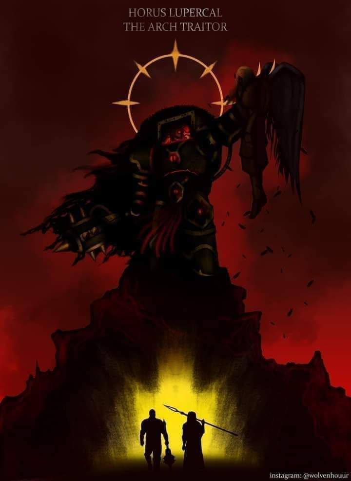

Sanguinius es la imagen viva de la nobleza y la pureza. Dotado de una belleza casi celestial y de alas majestuosas que evocan la esencia de un ángel guardián, su presencia irradia una calma y una compasión que inspiran a todos los que lo contemplan. Desde sus primeros días, se le vio como el paradigma del sacrificio y la virtud; un ser que, aun enfrentándose a destinos sombríos, ofrecía esperanza y redención. Su mirada, serena y melancólica, es un testimonio silencioso de las batallas internas y externas que lo han forjado como el ideal inalcanzable de la perfección filial y del amor incondicional hacia la humanidad.
En contraste, Horus Lupercal emerge como la encarnación de la pasión y la ambición desbordante. Su carisma y destreza en el campo de batalla le permitieron ascender al rango de Warmaster, convirtiéndose en el líder emblemático de la estrategia militar del Imperio. Sin embargo, tras esa fachada de poder y determinación, se gestaba una oscuridad interior. La sed de poder y el orgullo desmedido lo llevaron a desafiar el orden establecido, abriendo paso a una traición que marcaría el inicio de una de las eras más turbulentas y dolorosas. Horus simboliza la dualidad inherente en el ser humano: capaz de alcanzar cimas sublimes y, al mismo tiempo, de sucumbir a la corrupción, transformando la grandeza en tragedia.
Ambas figuras, tan disímiles y a la vez tan entrelazadas en su destino, continúan siendo el reflejo eterno de las posibilidades del alma: una destinada a la redención y el sacrificio, y la otra, a la caída y el abandono de la luz.